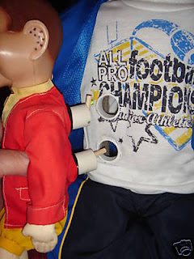

Building a "Double-Doody"
4/3/2009
{kind=link}

Question: I was fascinated to see the workings of the Howdy Doody. How does the smaller Howdy Doody work? Is their any booklet or diagrams in a book on this methods? Doug
* * * * *
Answer: My son, Kevin, designed and built this "Double-Doody" (see post for 3/30/09) and he lives in another state. I have not seen the dolls first hand, only the pictures, so you know as much about how this setup is designed as I do (although from looking at the photo, I could quite easily build my own version). Obviously, no plans exist other than what Kevin has in his memory bank since this is the first he has created in exactly this manner.
* * * * *
Answer: My son, Kevin, designed and built this "Double-Doody" (see post for 3/30/09) and he lives in another state. I have not seen the dolls first hand, only the pictures, so you know as much about how this setup is designed as I do (although from looking at the photo, I could quite easily build my own version). Obviously, no plans exist other than what Kevin has in his memory bank since this is the first he has created in exactly this manner.
I do have plans that show one method of building a full size vent figure. In fact, that book (Make Your Own Dummy by Bill Andersen) is one of the books I currently have listed for eBay auction: Click here to see them all.